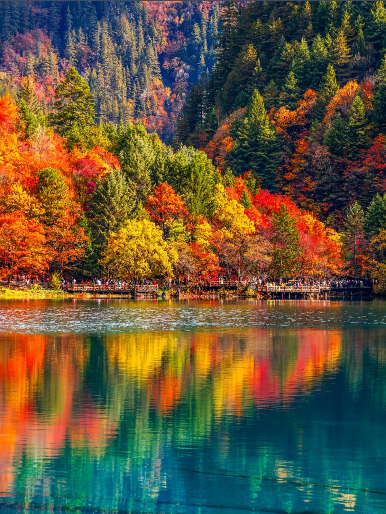
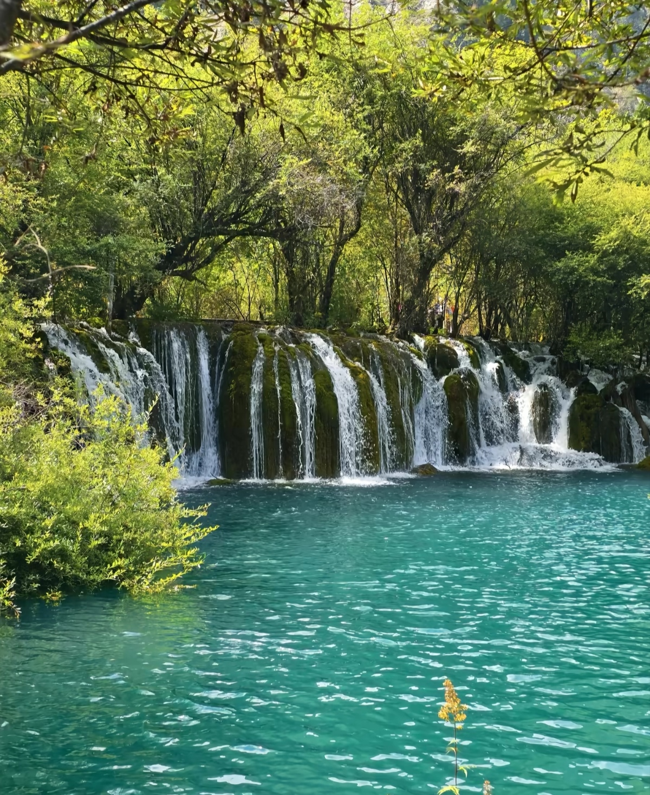
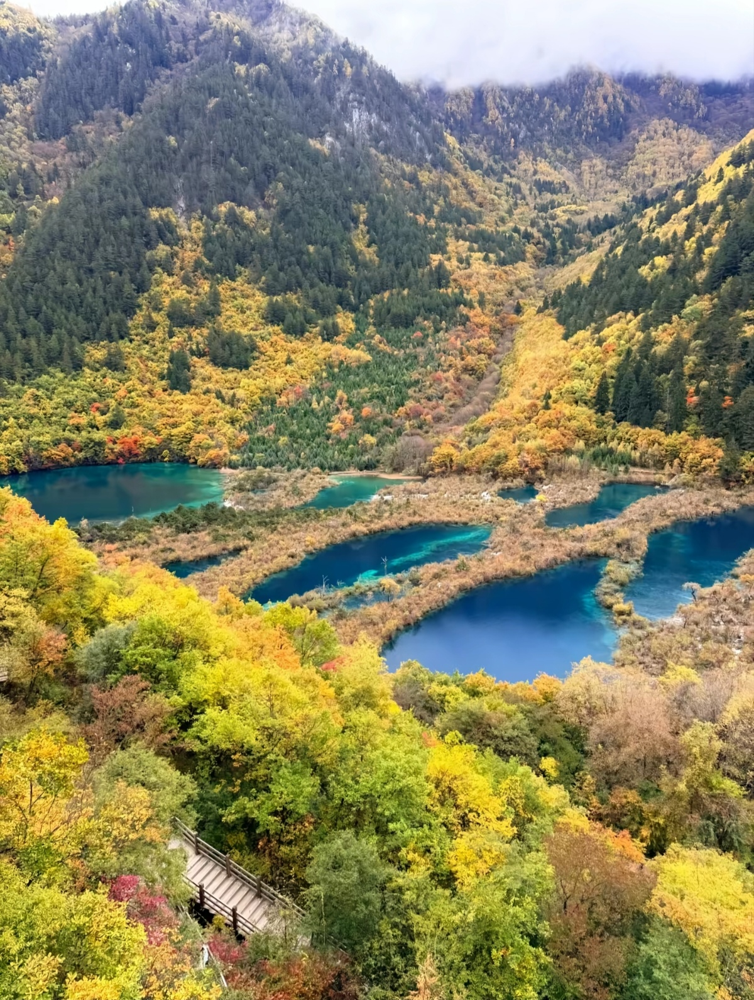
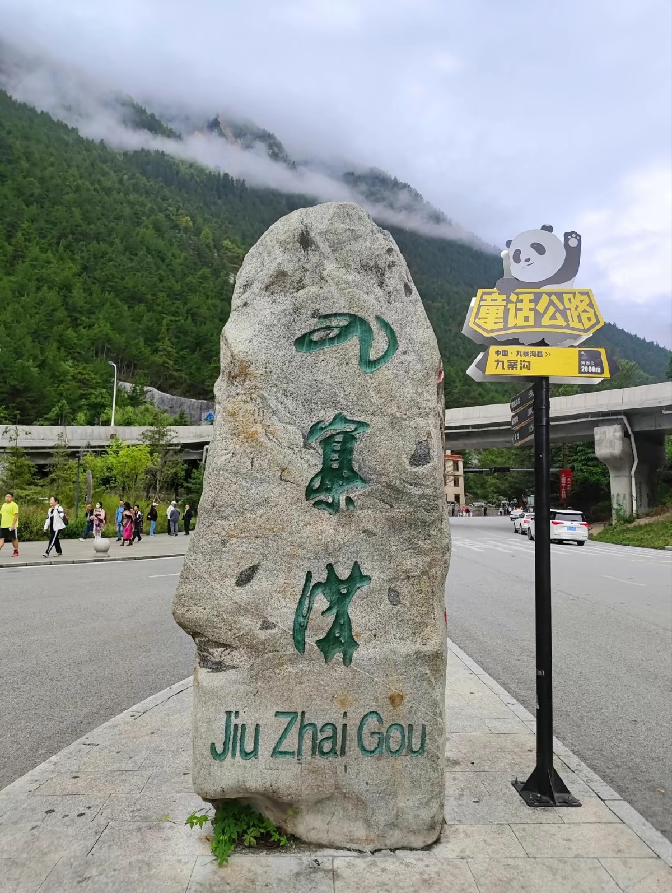
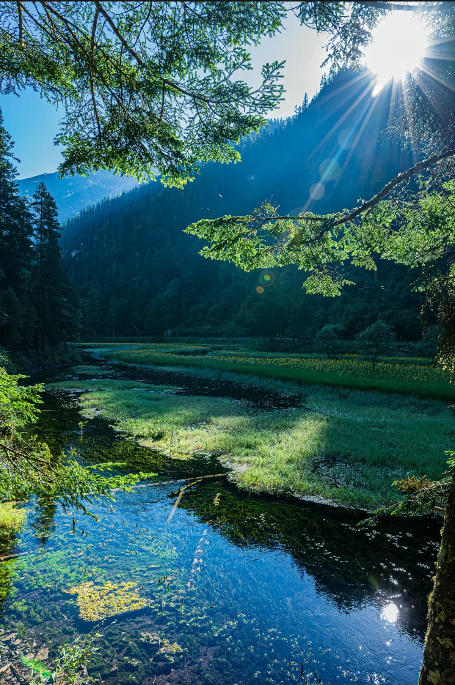
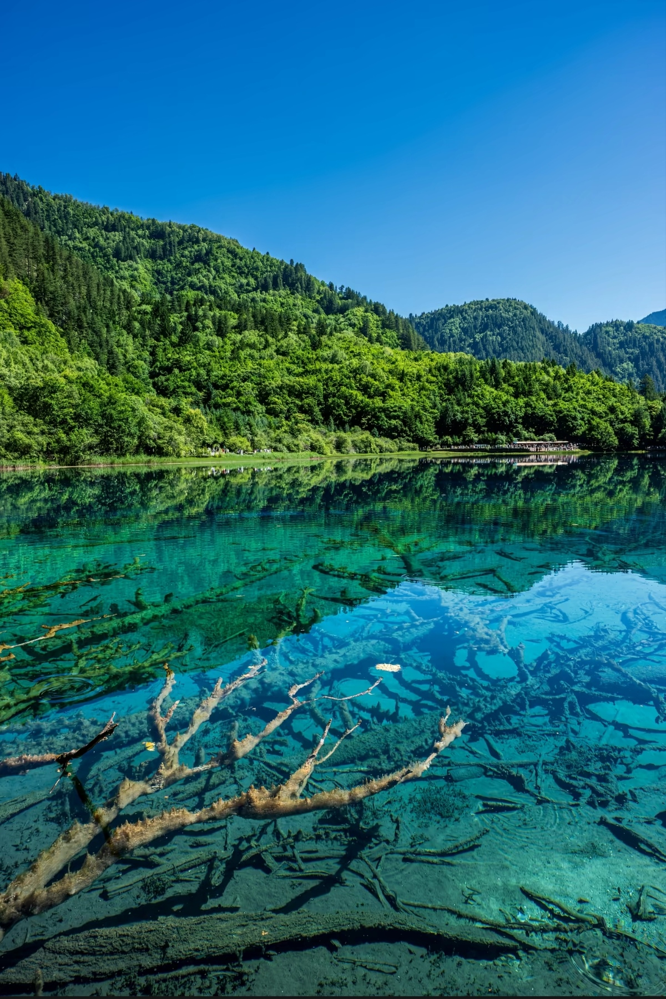

Jiuzhaigou Valley is a UNESCO World Heritage Site and nature reserve in northern Sichuan Province, famous for its multi-colored lakes, layered waterfalls, snow-capped peaks, and rich forests. The valley's name means "Nine Village Valley," referring to the nine Tibetan villages scattered throughout. The crystal-clear lakes, ranging from blue to green to turquoise, are caused by mineral deposits and algae. Autumn (October) is the most spectacular season when the forests turn brilliant red, orange, and gold.






Jiuzhai Huanglong Airport: Flights from Chengdu (1h, ¥600-1000), Chongqing (1h, ¥800), Beijing (2.5h, ¥1500). Airport to valley: bus 1.5h (¥45), taxi ¥200.
From Chengdu: Long-distance bus (8-10h, ¥150-200). Departs from Chadianzi Bus Station. Bumpy mountain road but scenic.
From Chengdu: Drive via Dujiangyan-Wenchuan (450km, 8-10h). Mountain roads, some toll sections. Rental car with driver recommended (¥800-1200/day).
Eco Bus System: Hop-on hop-off buses run throughout valley (included in ¥90 park bus ticket). Three main valleys: Shuzheng, Rize, Zechawa.
Morning: Enter → Shuzheng Valley (Nuorilang Waterfall, Shuzheng Lakes)
Midday: Rize Valley (Five Flower Lake, Pearl Shoal, Mirror Lake)
Afternoon: Zechawa Valley (Long Lake, Five Color Pond) → Exit
Day 1: Shuzheng Valley + Rize Valley (all major lakes and waterfalls)
Day 2: Zechawa Valley + revisit favorite spots + Tibetan village visit
Best for: Photography, nature lovers
Best Spots: Five Flower Lake (morning light), Mirror Lake (sunrise), Long Lake (sunset)
Tips: Arrive early to avoid crowds; tripod allowed; autumn colors peak mid-October
Day 1-2: Jiuzhaigou Valley
Day 3: Huanglong (nearby, 2h drive)
Best for: Complete natural scenery experience
Location: Near valley entrance and in Pengfeng Village
Specialty: Yak meat, Butter tea, Tsampa (roasted barley)
Hours: 7:00 AM - 9:00 PM
Location: Outside main entrance
Specialty: Noodles, Rice dishes, Local vegetables
Hours: 6:30 AM - 10:00 PM
Location: Inside hotels
Specialty: Higher quality, Buffet options, Western food available
Hours: 7:00 AM - 9:00 PM
Location: Pengfeng Village area
Specialty: Grilled skewers, Dumplings, Hot pot
Hours: 5:00 PM - 11:00 PM
Location: Near valley entrance
Features: Hot springs, Spa, Mountain views, Tibetan style
Note: Book months in advance for peak season
Location: Valley entrance area
Features: Comfortable, Restaurant, Tour desk
Distance to Entrance: 5-15 min walk
Location: Pengfeng Village (near valley)
Features: Authentic Tibetan experience, Home-cooked meals
Note: Basic but warm hospitality
Location: Various near entrance
Features: Dorm beds, Shared bathrooms, Travel info
Best for: Backpackers, budget travelers